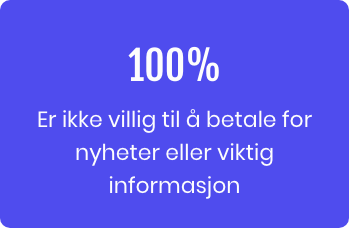
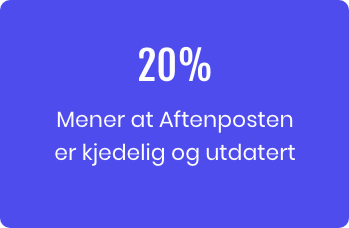
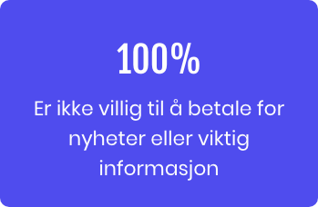
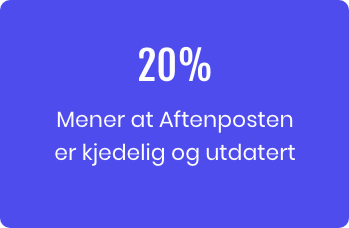

Introduksjon
Etablerte medier har et aldersproblem. De sliter med å forbli relevante for en generasjon som har vokst opp med distraksjoner og avledninger fra digitale medier. Men unge er fortsatt interessert i å vite - lese, høre og se - hva som skjer rundt seg. I dette prosjektet var oppgaven dermed å lage en prototype av en interaktiv løsning som skulle appellere til unge mellom 18 og 25 år. Målet var å få denne målgruppen til å oppsøke www.aftenposten.no oftere og mer regelmessig for å få nyheter og informasjon.
Problemstilling
«Hvordan kan Aftenposten presentere nyheter og relevant innhold til unge mellom 18-25 år for å øke bruk og engasjement blant målgruppen?»
Oppdragsgiver
Fagskolen Kristiania i samarbeid med Aftenposten
Team
Linh Nguyen, Jacqueline Lømsland Carroza, Christina Bø, Daisy Kumar & Amanda Jullum Ericsson
Tidsrom
7. januar til 11. februar 2020
Prototype
Test prototypen herVerktøy


Prosessen


Research
Reuters rapport
Vi startet prosessen med å lese Reuters rapport «How Young People Consume News and The Implications For Mainstream Media». Våre funn i denne rapporten viste at unge som oftest bruker telefonen når de leser nyheter, samt at de ønsker å bli eksponert for nyheter. Voksne derimot, oppsøker gjerne nyheter selv, via fysiske aviser og lignende.
Kvalitativ datainnsamling
Vi utførte 7 dybdeintervjuer av målgruppen, for å kunne kartlegge deres nyhetsvaner, og identifisere hvorfor Aftenposten ikke nådde ut til målgruppen. Informantene bestod av både kvinner og menn i alderen 19-25 år, oppvokst på forskjellige steder i landet, og med ulike studieretninger. Intervjuene tok omtrentlig 10-15 minutter, og inkluderte spørsmål som kartla deres nyhetesvaner, perspektiver på nyhetsbyråer, og deres tanker om dagens nyhetsbilde. Hovedformålet var så klart å finne ut om de i det hele tatt leste Aftenposten, og hvis ikke - hva var grunnen til det?
 



Når det gjelder målgruppens opplevelse av Aftenposten, så viste funnene altså at 60% ikke var aktive lesere av Aftenposten, og at ingen av informantene var villig til å betale for nyheter. Med tanke på at Aftenposten er en abonnementsbasert plattform, så anså vi dette som en viktig utfordring som vi ønsket å løse.
Vi fikk også innsikt i målgruppens opplevelse av nyhetsmarkedet generelt. Noe vi fant veldig interessant med tanke på den videre prosessen.
Ekspertinnsikt
Etter innsikten fra intervjuene begynte vi å få en viss anelse om hva vi ønsket å utvikle, men det var imidlertid en faktor vi fant utfordrende å løse. Nemlig det å få målgruppen til å betale for et abonnement. Ingen av informantene var villige til å betale for nyheter, men med tanke på at Aftenposten driver abonnementsbasert, så måtte vi klare å løse denne utfordringen. For å få en bedre forståelse for hvordan vi skulle løse dette, så følte vi behovet for å søke mer kunnskap hos eksperter. Vi valgte derfor å delta på et foredrag i regi av IxDA som omhandlet atferdspsykologi i design. En av foreleserne var Irmelin Bergh som har en ph.d i psykologi. Under foredraget lærte vi blant annet at vi måtte tenke på målgruppens indre motivasjon til å bruke en tjeneste ved design av et produkt. Vi fikk også tid til et kort intervju med Irmelin Bergh, der vi målet vårt var å få ekspertråd konkret til denne oppgaven. Hun rådet oss til å tenke på hvilke omgivelser som kunne ligge tilrette for at målgruppen skulle lese Aftenposten. Hun ga oss et konkret tips som gikk ut på at foreldrene til målgruppen kunne bidra ved å betale for abonnementet på vegne av sine barn. Videre fortalte hun at alle mennesker blir påvirket av konformitet, altså at mennesker har en tendens til å ha «flokkdyr»-mentalitet. Vi valgte derfor å ta med oss det sosiale aspektet videre i arbeidet vårt. Hun rådet oss også til å tenke på hvordan vi skulle fått et innpass hos målgruppen. Kanskje Aftenposten bør treffe målgruppen der de tilbringer tiden sin, som for eksempel i sosiale medier?
Kvantitativ datainnsamling
Etter intervjuet med Irmelin Bergh så vi oss rett og slett nødt til å finne ut om foreldre med barn i målgruppen, faktisk var villige til å betale et abonnement på vegne av sine barn. Vi valgte derfor å utarbeide en spørreundersøkelse, og dette var funnene vi hadde. Resultatene viste altså at over halvparten av foreldrene faktisk var villig til å betale på vegne av sine barn, noe som kom litt overraskende på oss med tanke på at målgruppen per definisjon er voksne. Det at noen også var villig til å betale opptil 200 kr i måneden for en slik tjeneste anså vi som et meget interessant funn. Majoriteten av foreldrene mente også at det burde være et større fokus på en mer ungdommelig tilnærming, for å øke engasjement blant målgruppen.
Analyse av Aftenpostens Si;D
Aftenposten Si;D er en debattside for ungdom mellom 13 og 21 år, så vi anså det som viktig å analysere ulike leserinnlegg fra den plattformen før vi utviklet konseptet. Da vi kom til kommentarfeltene på enkelte innlegg så oppdaget vi at voksne mennesker hadde kommentert i en svært negativ tone. Vi stusset over hvorfor voksne mennesker valgte å gjøre dette istedenfor å støtte ungdommenes samfunnsengasjement. Som voksen deler man selvfølgelig ikke alltid de samme synspunktene som unge, men det gir jo likevel ikke voksne rett til å bagatellisere ungdommenes synspunkter og følelser.
Personas

Personas - Aftenposten
Dette gjorde at vi fikk et ganske klart bilde av hva målgruppen synes om Aftenposten. Vi anså dette som et viktig funn for videre å kunne utarbeide et produkt som traff målgruppen bedre.
Konseptutvikling
Konsept
Funksjoner

Abonnementsprisen valgte vi å fastsette til kr. 39 i mnd. Dette er en pris vi anser som fornuftig for å treffe, i hovedsak, målgruppen, men også deres foreldre. Fordelen med å introdusere målgruppen for en abonnementsløsning allerede ved bruk av MODUS, er at de trolig blir mer tilbøyelige for å betale for et annet abonnement på et senere tidspunkt.
Vår modus-bar gir brukerne muligheten til å filtrere mellom lettleste artikler med kort lesetid, og dypdykk som har lengre lesetid. På denne måten kan de enkelt vurdere om de for eksempel har tid til å lese en artikkel i løpet av bussturen til skolen.
Stories gjør at brukerne kan få korte nyhetsoppdateringer på farta i et mer visuelt format enn det en artikkel tradisjonelt har. Dette er også noe målgruppen er godt kjent med fra sosiale medier.
Og sist, men ikke minst, så har vi UTROP. Her kan brukerne skrive egne leserinnlegg, og lese andres innlegg. De kan følge andre «UTROPere», og fremme artikler de liker.
Brukerreise
Sitemap
User flow
Design
Visuell identitet
Selv om vi ønsket at designet skulle kunne identifiseres med Aftenposten, så forstod vi raskt at det også måtte appellere til målgruppen på en annen måte enn det Aftenposten allerede gjorde. Vi ønsket at deres persepsjon av MODUS skulle være en annen enn persepsjonen de hadde av Aftenposten.
Trådskisse
Dette var den første skissen vi lagde av brukergrensesnittet, slik at vi skulle få en følelse av hvordan vi ønsket at det skulle se ut. Vi inkluderte de elementene vi hadde bestemt oss for, og jobbet med å plassere de logisk.
Brukertesting og iterasjoner
I følge Donald Normans artikkel “Why you only need to test with 5 users” er det mulig å lære omtrent 80% av brukerfeilene, problemer og atferdene til de 5 første brukere. Derfor valgte vi å utføre 5 brukertester etter hver fase (lo-fi, mid-fi og hi-fi). Tilbakemeldingene vi fikk var verdifullt for videreutvikling av designet og brukergrensesnittet."
Lo-fi


Forside
Positiv feedback
Brukertesterne likte ideen og konseptet godt
De elsket ideen med «nyhetsstories»
De syns at artiklene var satt opp på en ryddig og fin måte
Forbedringspotensiale
Brukertesterne var forvirret over at det var to menyer - både en hamburgermeny og en meny nederst
Selv om de likte stories, så syns de at designet blir litt for likt Instagram
Mid-fi
Forside
Positiv feedback
Brukertesterne syntes at designet var ryddig og fint
De elsket stories, og prøvde intuitivt å trykke med en gang
De likte at man får opp antall minutter lesetid under artiklene
Forbedringspotensiale
Brukertesterne la ikke merke til modus-bar
De la heller ikke merke til menyen nederst
Hi-fi


Forside
Positiv feedback
Brukertesterne syntes at fargene var fine, og at designet var ryddig
De elsket stories, og sa at dette var en funksjon de hadde brukt
De likte hvordan artiklene er satt opp
Denne gangen la de merke til menyen, og likte den
Forbedringspotensiale
Til tross for at de likte menyen, så ble det nevnt at det manglet en hjem-knapp
UTROP
Positiv feedback
UTROP ble tatt godt i mot av målgruppen, de syntes det var kult at de kunne få egenskrevne artikler publisert hos selveste Aftenposten.
Forbedringspotensiale
Vår første tanke var at brukerne skulle ha mulighet til å gi antall flammer på hverandres artikler, slik at de kunne fremme gode artikler. Dette ble riktignok ikke tatt godt i mot av målgruppen, da de ikke likte tanken på at noen skulle gi rating på deres meninger. De ønsket heller at flammene kunne brukes til å vise antall visninger på artikkelen.

Hva har jeg lært gjennom prosjektet?
- At intervjuer og research er gull verdt. Vi fikk for det første god innsikt fra målgruppen, men det var ekspertinnsikten, og foreldreinnsikten som virkelig gjorde at vi løste noen av de utfordringene vi hadde
- Det var gjennom dette prosjektet jeg så ordentlig for første gang hvor viktig brukertesting er. Det å få feedback fra målgruppen på designet kontinuerlig er så viktig for å kunne skape et godt sluttprodukt
- Jeg fikk erfaring med å presentere foran en kunde, og til og med på engelsk, og det var gull verdt for meg som, på det tidspunktet, var veldig nervøs i forkant av en presentasjon